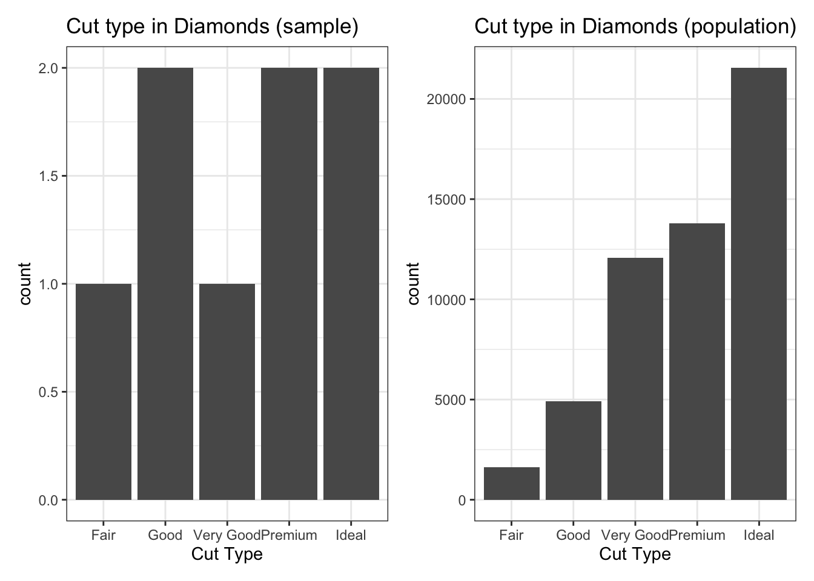

Topic 3: Descriptive Statistics for Numerical and Categorical Data
About
This activity builds on what we learned in the Topic 1 and Topic 2 activities. We’ll use R to analyze numerical and categorical data — computing and interpreting measures of central tendency and spread for numerical data, and frequency tables for categorical data.
Descriptive Statistics
Workbook Objectives:
- Compute and discuss appropriate summaries for both numerical and categorical data.
- Discuss the difference between mean and median, and between standard deviation and interquartile range. Identify when each is appropriate.
- Compute summary statistics both by hand and with R.
Important Reminders:
- A variable is numerical if a summary statistic such as the mean has a meaningful interpretation.
- A variable is categorical if it serves to sort observations into different groups.
- The unique values a variable takes are called the levels of that variable.
Summarizing Numerical Data
Measuring Central Tendency
Measures of Central Tendency: The mean and median both attempt to measure the center of a dataset.
The mean of a set of observations is the traditional average, denoted \(\bar{x}\) (or \(\mu\) for population data): \[\bar{x} = \frac{\displaystyle{\sum_{i=1}^{n}{x_i}}}{n} = \frac{x_1 + x_2 + \cdots + x_n}{n}\]
The median is the middle value when observations are listed in ascending order. If there are two middle values, the median is their mean.
Example: The following are three random samples of carat values from the diamonds dataset.
| Sample_One | Sample_Two | Sample_Three |
|---|---|---|
| 0.41 | 2.68 | 1.05 |
| 1.01 | 1.01 | 0.31 |
| 1.22 | 0.26 | 0.31 |
| 1.02 | 0.90 | 0.30 |
| 0.30 | 0.43 | 0.40 |
| 0.30 | 0.53 | 1.50 |
| 1.00 | 2.00 | 2.27 |
| 1.17 | 0.33 | 10.00 |
- Use the code block below to compute the mean of
Sample_One.
Hint 1
Manually add up the carat values in Sample_One and divide by the number of diamonds in the sample.
(___ + ___ + ___ + ___ + ___ + ___ + ___ + ___) / ___
Hint 2
(0.41 + 1.01 + 1.22 + 1.02 + 0.30 + 0.30 + 1.00 + 1.17) / 8
(0.41 + 1.01 + 1.22 + 1.02 + 0.30 + 0.30 + 1.00 + 1.17) / 8
(0.41 + 1.01 + 1.22 + 1.02 + 0.30 + 0.30 + 1.00 + 1.17) / 8In R we can easily compute means and medians for our samples or for the entire dataset. The $ operator accesses a column of a data frame, and R includes mean() and median() functions. Both methods below compute the mean of Sample_Two:
mean(samples$Sample_Two)[1] 1.0175samples |>
summarize(avg_carat_wt = mean(Sample_Two)) avg_carat_wt
1 1.0175While the second method involves more typing, it is much more readable. Getting comfortable with the pipe operator (|>) will allow you to chain data manipulation steps together.
- Use the code block below to compute the mean of
Sample_Three. You may use either method.
Hint 1
Start with the code below and update it to compute the mean of Sample_Three.
samples |>
summarize(avg_carat_wt = mean(Sample_Two))
samples |>
summarize(avg_carat_wt = mean(Sample_Three))
samples |>
summarize(avg_carat_wt = mean(Sample_Three))- Use the
median()function and the code block below to compute the median of each sample, then answer the question that follows. (This block is for exploration — it is not graded.)
Hint 1
Start with the copied code and update it to compute the median instead of the mean.
samples |>
summarize(avg_carat_wt = mean(Sample_Two))
Hint 2
The summarize() function can compute multiple summary statistics at once.
samples |>
summarize(
avg_carat_wt_samp1 = mean(Sample_One),
avg_carat_wt_samp2 = mean(Sample_Two),
avg_carat_wt_samp3 = mean(Sample_Three)
)
Check Your Understanding: Measures of Center
What does your work above tell you about the mean and median as measures of central tendency?
- In our first activity we saw that sample data can be used to make generalizations about populations. Answer the following questions with this in mind.
Check Your Understanding: Sampling and Validity I
Assuming the samples of diamonds were taken randomly, which of the following claims is justified?
Check Your Understanding: Sampling and Validity II
Which of the following would result in improved estimates for the true mean carat weight of diamonds in our population? Select all that apply.
Aside: Defining Your Own Data
For data not already stored in a data frame, we can use the c() function to create a list of values. Consider the distributions of doors knocked on by two political campaign workers last week (Monday–Friday):
\[\text{Worker A}: 23,~24,~25,~26,~27 \qquad \text{Worker B}: 0,~15,~25,~35,~50\]
The following code block finds the mean and median for Worker A. Run it, then add two lines to also find the mean and median for Worker B.
Hint 1
Copy and paste the two existing lines and replace the data inside c() to reflect Worker B.
Hint 2
mean(c(23, 24, 25, 26, 27))
median(c(23, 24, 25, 26, 27))
mean(c(___, ___, ___, ___, ___))
median(c(___, ___, ___, ___, ___))
mean(c(23, 24, 25, 26, 27))
median(c(23, 24, 25, 26, 27))
mean(c(0, 15, 25, 35, 50))
median(c(0, 15, 25, 35, 50))
mean(c(23, 24, 25, 26, 27))
median(c(23, 24, 25, 26, 27))
mean(c(0, 15, 25, 35, 50))
median(c(0, 15, 25, 35, 50))- Use your explorations of means and medians for the campaign workers to answer the following.
Check Your Understanding: Measures of Center
Which of the following are correct? Select all that apply.
Measuring Spread
The standard deviation of a set of observations is denoted \(s\) (or \(\sigma\) for population data): \[s = \sqrt{\frac{\displaystyle{\sum_{i=1}^{n}{\left(x_i - \bar{x}\right)^2}}}{n-1}}\]
The interquartile range (IQR) measures the spread of the middle 50% of observations: \[IQR = Q_3 - Q_1\]
where \(Q_1\) is the 25th percentile and \(Q_3\) is the 75th percentile.
- Check your intuition about these measures.
Check Your Understanding: Measures of Spread I
Without carrying out the computations, which sample of diamonds has the largest standard deviation?
Check Your Understanding: Measures of Spread II
Which measure of spread is more greatly impacted by the presence of outliers?
The two plots below show the distribution of carat weights for the diamonds in our population — a histogram (left) and a boxplot (right). The purple line marks the mean.

The code block below computes standard deviations and IQRs for each sample. Run it and explore the output. (This block is for exploration — it is not graded.)
Use the code block below to find the standard deviation and IQR for each campaign worker. (This block is for exploration — it is not graded.)
Hint 1
Use the c() function to define your door-knocking data, then apply sd() and IQR().
Hint 2
Storing your data in variables first will save some typing.
worker_a <- c(___)
worker_b <- c(___)
Hint 3 (Solved)
worker_a <- c(23, 24, 25, 26, 27)
worker_b <- c(0, 15, 25, 35, 50)
sd(worker_a)
IQR(worker_a)
sd(worker_b)
IQR(worker_b)Summarizing Categorical Data
Categorical data is best summarized using a frequency table. Consider the samples of diamond cuts below:
| Sample_One | Sample_Two | Sample_Three |
|---|---|---|
| Good | Ideal | Fair |
| Very Good | Good | Good |
| Ideal | Premium | Premium |
| Premium | Very Good | Premium |
| Premium | Premium | Ideal |
| Ideal | Premium | Good |
| Premium | Ideal | Very Good |
| Ideal | Premium | Ideal |
We can pipe our data frame into count() to construct a frequency table, and use mutate() to add a relative frequency column. The code block below is preset for Sample_One — adapt it to summarize Sample_Two and Sample_Three. (This block is for exploration — it is not graded.)

Submit
Submit Your Work
When you have completed the activity, copy the submission code below and paste it into the course submission form provided by your instructor.
Summary
- We can summarize numerical data using measures of central tendency and measures of spread.
- The mean (\(\bar{x}\) for samples, \(\mu\) for populations) and median measure the center of numerical data.
- The standard deviation (\(s\) for samples, \(\sigma\) for populations) and IQR measure the spread of numerical data.
- The median and IQR are robust measures in the presence of outliers.
- Categorical data is best summarized in a frequency table or relative frequency table.